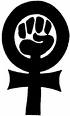

پذيرش > مقالات > خارج از چارچوب > تأمین بودجه و ساختار جنبش در ایران
 "گفتگوی هما مداح با انجمن حقوق زنان در توسعه" "گفتگوی هما مداح با انجمن حقوق زنان در توسعه"

 تأمین بودجه و ساختار جنبش در ایران تأمین بودجه و ساختار جنبش در ایران
24 تیر 1387 - - نسخه قابل چاپ
هما مداح يکي از فعالان حقوق زن و عضو کمپين يک ميليون امضا در مصاحبه با " انجمن حقوق زنان در توسعه" درباره منابع مالي و ساختار جنبش در ايران مصاحبه اي داشته است، متن اين مصاحبه به شرح زير است :
راشل جونز: در جنبش حقوق زنان در ایران چه فعالیتی میکنید؟
من 19 ساله بودم که به "مرکز فرهنگی زنان" در تهران پیوستم. این یک سازمان زنان غیر دولتیی مهم بود و برای من شانس بزرگی بود تا با فمینیستهای مشهوری مثل پروین اردلان - روزنامهنگار و برنده جایزه اولاف پالمه - و سایر زنان سرشناس سه نسل کار کنم؛ خودِ من به نسل سوم تعلق دارم. در آن زمان کار ما نوعی دفاع فرهنگی از حقوق زنان بود. جزوههایی درباره اجحافات حقوقی و خشونت علیه زنان منتشر میکردیم. هم چنین از طریق یک شبکه با سایر گروهها و سازمانهای زنان کار میکردیم که پس از بردن جایزه صلح نوبل، به پیشنهاد شیرین عبادی کارش را آغاز کرد. در ماه ژوئن 2005 تصمیم گرفتیم تظاهراتی علیه قوانین نابرابر برگزار کنیم. از آن زمان به بعد فعالین حقوق زنان در ایران روز 12 ژوئن را روز ملی همبستگی خود در مبارزه با قوانین تبعیضآمیز علیه زنان تلقی میکنند. تظاهرات مسالمتآمیزِ سال 2006 با خشونت بر هم زده شد و 70 نفر دستگیر شدند. سپس، برای دستیابی به اهدافمان، "کمپین یک میلیون امضا" را راهاندازی کردیم. در تمام این سالها فعالیت من در زمینهی حقوق زنان داوطلبانه بوده است. همچنین مقالات مختلفی نوشتهام یا از سایتهای گوناگون ترجمه کردهام. در حال حاضر دانشجوی فوق لیسانس در دانشگاه تهران هستم و به طور متمرکز در کمپین یک میلیون امضا فعالیت میکنم.
راشل جونز: درباره راههای تأمین بودجهی فعالیتهایتان صحبت کنید.
به اعتقاد من روش تأمین بودجهی این فعالیتها در ایران منحصر به فرد است و به دو دلیل برای فعالین حقوق زنان، الزاماً، اهمیت چندانی ندارد. اولاً: اکثر فعالین حقوق زنان داوطلبانه کار میکنند - آنها برای فعالیتهایشان در زمینه دفاع از حقوق زنان پول نمیگیرند. آنان معمولاً مشاغل دیگری دارند، مثل خبرنگاران، نویسندگان، معلمان یا زنان خانهدار. بارها از دوستانم در کشورهای دیگر (به خصوص در مناطق خاورمیانه تا آفریقای شمالی) شنیدهام که فعالیتِ آنان شغلشان است، اما در ایران چنین نیست. دوماً: دولت ایران به "دریافت پول از خارج از ایران" واقعاً حساس است. برای این کار، فکر میکنم لازم است از وزارت امور خارجه اجازه گرفت، چون آنها نسبت به منابع مالی و اهدافشان بدبین هستند. حکومت معمولاً در ایران فعالین را متهم میکند که بخشی از یک برنامه وسیع برای تضعیف جمهوری اسلامی ایران هستند. در نتیجه، مسئلهی تأمین بودجه در ایران به کمکهای سخاوتمندانهی اشخاص و کمکهای مالی ناشناس (از سوی افراد خیرخواه یا خود فعالین) محدود است. علاوه بر این، سازماندهی شده نیست، یعنی هر وقت پولی لازم داریم جمع میکنیم، اما برنامهی خاصی برای آن نداریم. وقتی گفتم "منحصر به فرد" منظورم آن بود که در ایران (حداقل در میان بخشی از جنبش زنان، اگر نه همه آن!) به شکل دیگری سازماندهی میشود. منظورم از "نه چندان مهم" هم این بود که ما معمولاً از سازمان و خارج از ایران پول نمیگیریم و به علت شرایط خاص حاکم بر ایران، این سیاست ماست. بایستی تأکید کنم که من از سوی گروه خودم صحبت میکنم - ما مدافع برابری حقوق هستیم و هزینههایمان محدود میشود به: نشر جزوات و کتابچهها، هزینه ثبت وب سایت، مسافرت و اجاره محل برای برگزاری جلساتمان.
راشل جونز: این واقعیت که اکثر فعالیتهای فعالین بدون دریافت پول انجام میشود، باید بر توان فعالین تأثیر فراوانی بگذارد. با وجود این - زنان ایرانی هنوز بسیار فعال هستند! زنان چگونه وقت فعالیت را پیدا میکنند و حمایت خانوادهها از این کار "اضافی" چیست؟
بسیاری از زنان فعال در زمینه حقوق زنان به صورت نیمه وقت یا در خانه کار میکنند؛ تعدادی روزنامهنگار نیمه وقت و مترجم هستند، بنابراین میتوانند وقت خود را تنظیم کنند و کار و فعالیت را در کنار یکدیگر پیش ببرند. هر چند من گاهی اوقات مبهوت انرژی و توان آنان میشوم - به ویژه در مورد مادران 40 - 30 ساله! باید اضافه کنم که اکثر فعالین در ایران دانشجویان جوان هستند، بنابراین معمولاً به هزینه خانواده و با آنها زندگی میکنند.
در مورد حمایت خانواده گرایشات گوناگونی وجود دارد. بسیاری از فعالین از خانوادههایی میآیند که سابقه فعالیت سیاسی دارند؛ برای مثال، والدین (یا شوهرانشان) در انقلاب اسلامی سال 1979 شرکت داشتند. در نتیجه این گونه خانوادهها معمولا (نه همیشه!) همدل و حمایتگر هستند. شوهران از کودکان مراقبت میکنند و والدین، دختران جوان خود را درک میکنند. فکر میکنم فعالینی که از خانوادههای مذهبی میآیند، وضعیت پیچیدهتر دارند، چون از اسلام تفسیرهای بسیار متعددی وجود دارد و معمولاً تفسیر یک فعال زنان با دیدگاه والدیناش یکسان نیست.
راشل جونز: گفتید از آن جایی که کمکهای مالی بیشتر از سوی افراد و اغلب محرمانه تأمین میشود، چندان سازماندهی شده نیستند. آیا ایدهای دارید که بهتر بتوان آنها را سازماندهی کرد تا برای فعالیت در زمینه زنان در ایران مفیدتر باشد؟
بله، فکر میکنم کمک مالی در ایران بیشتر شبیه نوعی کار خیریه است: اگر پول لازم داشته باشی، میروی و از دیگران درخواست کمک میکنی. کمککننده را در روند فعالیت خودت دخالت نمیدهی، آنها فقط به تو پول میدهند. فکر میکنم باید آنها را در فعالیتهایمان بیشتر دخالت دهیم، باید به آنها گزارش دهیم که پول را چگونه خرج کرده ایم. برای مثال، "ما با پول شما 3000 جزوه چاپ کردیم و در 12 منطقهی ... توزیع کردیم. میتوانیم این کار را هر ماه بکنیم."
در مورد جمعآوری کمک مالی از سوی فعالین، فکر میکنم به یک برنامه دقیق برای خرج آن نیاز داریم که در ایران مشکل است، زیرا گاهی میتوانی چیزی چاپ کنی و گاهی نمیتوانی! گاهی میتوانی ترتیب برگزاری یک جلسه را بدهی، گاهی نمیتوانی.
راشل جونز: منظورت از یک "برنامه دقیق" چیست؟
این نوعی آرزوی (محال) در ایران است، چون نمیدانی فردا چه پیش میآید. اما فکر میکنم با وجود این، برای کارهایی که میخواهیم در زمانهای مختلف به انجام برسانیم، باید یک برنامه داشته باشیم و تا جایی که میتوانیم سعی کنیم آنها را عملی کنیم، حتا اگر فقط 20 درصد اوقات عملی شوند. ما معمولا برای موارد خاص یا برای چاپ مطلب پول جمع میکنیم، مثلا: دو ماه پیش دوستانم میخواستند مجموعه مقالاتی درباره "چندهمسری" در ایران را به چاپ برسانند. هزینهها را تخمین زدند و مطمئن شدند که میتوانند آن را به چاپ برسانند (معمولاً نمیتوانیم مجوز چاپ از دولت بگیریم، بنابراین باید به شکلی نیمه قانونی و با هزینههای بالاتری این کار را بکنیم!). سپس به جلسه آمدند و کمک خواستند. یکی گفت "من میتوانم هزینه 20 جلد را بپردازم". دیگری گفت "من هزینه 50 جلد را میدهم" و به این ترتیب فهمیدند که میتوانند، مثلا، 1000 نسخه چاپ کنند. منظورم از یک "برنامه دقیق" آن است که از اول سال کم کم پول لازم برای انتشار و توزیع را جمع کنیم. حتا اگر نتوانیم در آن سال به خصوص چیزی را به چاپ برسانیم، میتوانیم این پول را در موارد دیگر خرج کنیم. این کار در ایران سخت است، اما فکر میکنم باید یک چنین چیزی را شروع کنیم.
راشل جونز: آیا بسیج در منطقه، از خاورمیانه گرفته تا شمال آفریقا، در فعالیت شما نقش مهمی ایفا میکند؟
بله. خیزش جنبش زنان در منطقه به دو دلیل کمک زیادی به ماست. اول، چون وضعیت ما با وضعیت آنها شباهت زیادی دارد: قوانین ما، رسوم اجتماعی ما، حتا دولتها و علمای ما. به این ترتیب از یکدیگر چیزهای زیادی یاد میگیریم. برای مثال، کمپین یک میلیون امضا از کمپین یک میلیون امضا در مراکش الهام گرفته شد. دوم، اگر توسط دولتهای منطقه تغییری به وجود آید، به دولت ما هم برای تغییر فشار میآورد، چون در تماس تنگاتنگ قرار دارند و ارتباط نزدیکی با هم دارند.
راشل جونز: به علت وضعیت منحصر به فرد و شیوهی تأمین بودجهی غیر رسمی، فکر میکنید گروههای زنان ایرانی در دفاع از برابری و کسب حقوق، به یاری و پیوند با جنبشهای فمینیستی بینالمللی بیشتر متکی هستند؟ این پیوندها را چگونه میتوان تقویت کرد؟
بله. پیوند با گروهها و جنبشهای بینالمللی خارج از ایران یکی از منابع اصلی حمایت و دفاع از ما است. برای مثال، همان طور که میدانید در ایران دستگیریهای زیادی انجام شده است و امیدواریم که با ارتباطاتمان با جنبشهای بینالمللی بتوانیم به دوستانمان در زندان کمک کنیم. پیوندهای بینالمللی منبع مالی نیستند.
راستش را بخواهید، این پیوندها بسیار جدید و اندک اند. در گذشته، اکثر ارتباطات با سازمانها و جنبشهای فمینیستی از طریق زنانی بود که در خارج از کشور یا در تبعید زندگی میکردند (تعداد زیادی از آنها در کشورهای مختلف هستند!). روابط ما با خارج از کشور نوعی رابطهی یک طرفه بود. من خودم مقالات زیادی (در حدود 20 مقاله) ترجمه کردم، اما هیچ وقت به نوشتن فکر نمیکردم، چون جرأتاش را نداشتم و فکر میکردم در ایران در مقایسه با کشورهای خاورمیانه و شمال آفریقا چیزی مهمی برای نوشتن وجود ندارد! الان جرأت یافتهایم و به اهمیت این گونه روابط واقفیم.
به علت شرایط ایران، فکر میکنم تقویت این پیوندها به کارِ سختِ زیادی نیاز دارد. نمیتوانیم در تهران جلسهای برگزار کنیم، و گاهی نمیتوانیم حتا در نشستهای بینالمللی سازماندهی کنیم. بنابراین فکر میکنم استفاده از اینترنت و آگاهی نسبت به آن چه که در کشورهای دیگر میگذرد، بهترین راهِ تقویت این پیوندها در مقطع کنونی است.
ترجمه : شهرزاد نيوز
منبع : شبکه همبستگي با مبارزات زنان ايران
ارسال به
بالاترین
،
توییتر
،
فریندفید
،
فیسبوک
در همين بخش :
 8 مارس روزی که نمی توان از ما دریغ کرد 8 مارس روزی که نمی توان از ما دریغ کرد
با طلاق توافقی از حقارت و کتک و فحش رها شدم /گزارشی از دادگاه محلاتی: مریم مالک
تجمع مادران عزادار در رشت
تغییر ممکن است/ جلوه جواهری(26 روز پس از بازداشت کاوه مظفری)
گامهایی که با تزلزل نا آشنایند/ گرامی داشت چهلم ندا در رشت
ديگر بخش ها :
طرح یک میلیون امضا
|
مقالات
|
سایت نوشته ها
|
اخبار
|
گزارش كمپين
|
گفت و گو
|
علیه سکوت
|
كوچه به كوچه
|
نامه های شما
|
گزارش ویژه
|
گفتگو با اعضا
|
ویژه سالگرد کمپین
|
تصویر برابری
|
دل آرام علی
|
تریبون
|
مقالات
|
تاریخ شفاهی
|
خارج از چارچوب
|
کتابخانه
|
درباره کمپین
|
کمپین در شهرها
|
کمپین در بند
|
صدای تغییر
|
ویژه 22 خرداد
|
لایحه حمایت از خانواده
|
گالری
|
عشا مومنی
|
امیر یعقوبعلی
|
خدیجه مقدم
|
راحله عسگری زاده و نسیم خسروی
|
پروین اردلان،جلوه جواهری، مریم حسین خواه، ناهید کشاورز
|
زینب پیغمبرزاده
|
سعیده امین، سارا ایمانیان، محبوبه حسین زاده، ناهید کشاورز و همایون نامی
|
احترام شادفر
|
نسیم سرابندی زاده،فاطمه دهدشتی
|
وبلاگ مهمان
|
پرونده خرم آباد
|
دستگیری ها
|
مریم مالک
|
پرستو اللهیاری
|
مهرنوش اعتمادی
|
سمیه رشیدی
|
Other Languages
|
همراهان
|
«فراخوان کمپین ده روز با بهاره هدایت»
| English
|